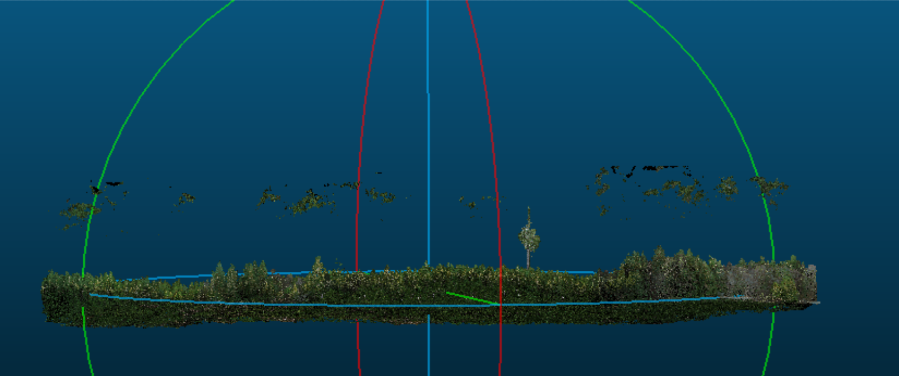
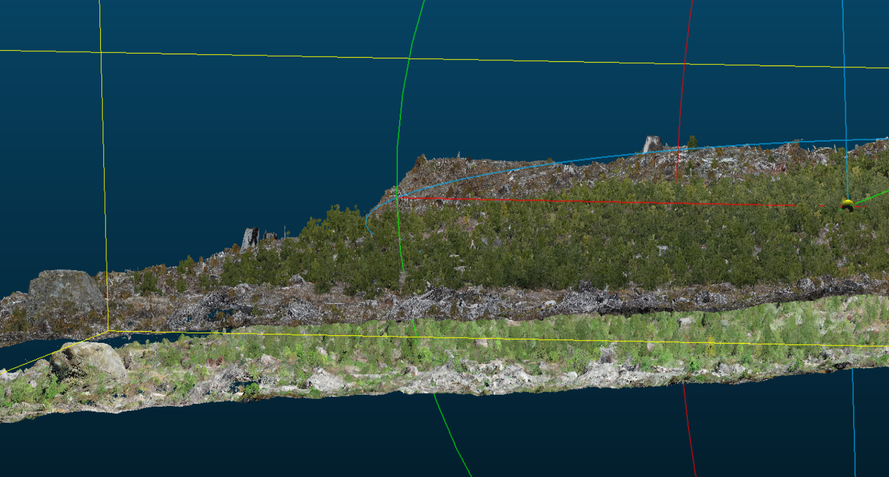
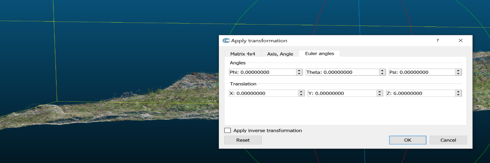
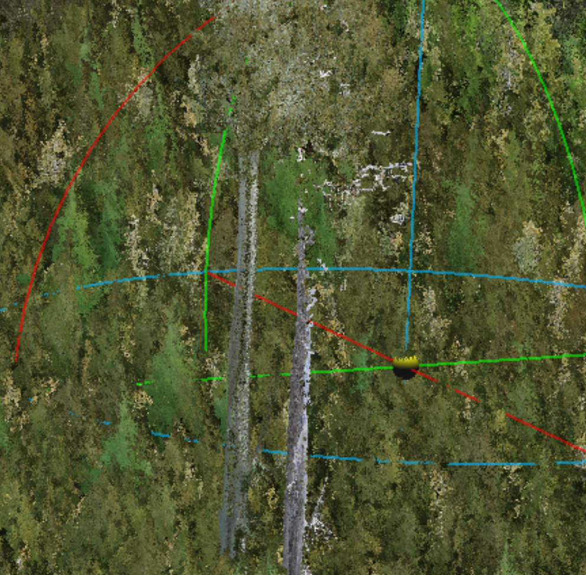
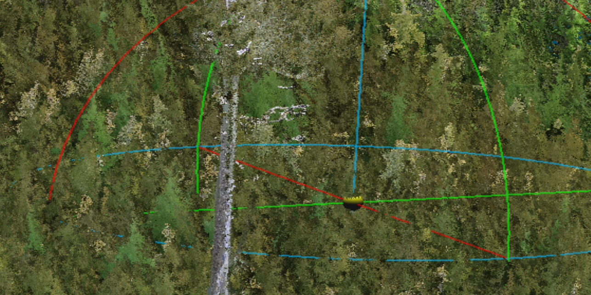
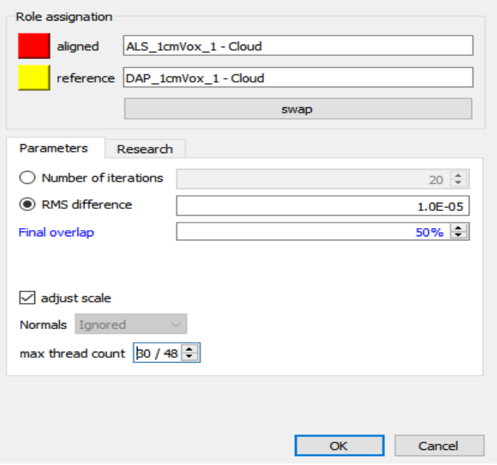

Chapter 6 LiDAR Processing Workflow
6.1 DJI Terra
- Open DJI Terra and start a LiDAR Point Cloud Processing session
- Import the flight files, including imagery if you would like a colorized point cloud
- Below are the settings we use to process the point cloud:
- We use the deafult settings set by DJI with the exception of setting the DEM resolution to 10cm

6.2 Register the LiDAR to the DAP point cloud
Convention is generally to register DAP to LiDAR however for this specific project it made more sense to register the LiDAR to the DAP because: - We were flying biweekly multispectral and RGB imagery and only 2-3 LiDAR acquisitions a year. - We could not load the LiDAR point cloud into Agisoft Metashape to use as a reference for registration however could register all DAP clouds to a reference DAP cloud in Agisoft. - This allowed us to more easily register the many multispectral and RGB acquisitions to a defined template in Agisoft Metashape and use the exported point cloud of the template DAP to register the LiDAR in CloudCompare. - This process worked well for us since our priority was centimeter-level registration of orthomosaics and LiDAR between many dates and across multiple sensors.
6.2.1 Prepare LiDAR for registration
Below are snipets of a script written in LAStools that is used to ensure the LiDAR and DAP clouds are in the proper projection, filters out points in the LiDAR that are above a defined threshold, and clips the LiDAR to a boundary polygon to speed up registration by avoiding working with excess data in CloudCompare.
The unparsed script can be found on the project GitHub, see GitHub link
- Ensures both the DAP point cloud and LiDAR file are in the proper projection (NAD83 UTM 10N in our case)
- path_to_L1_las is the path to the LiDAR .las file from DJI terra.
- path_to_write is where the path the projected .laz file will be written to. The files will be saved out with the same file name as the origianl LiDAR file with a “_nad83” suffix.
- “REM” works to comment out a line in LAStools as “#” does in R.
REM Project DAP and save out as a .laz
las2las -i path_to_DAP_las_file ^
-odir path_to_write ^
-odix _nad83 ^
-olaz ^
-nad83 ^
-utm 10north ^
-cpu64 ^
-v
REM Project LiDAR and save out as a .laz
las2las -i path_to_L1_las ^
-odir path_to_write ^
-odix _nad83 ^
-olaz ^
-nad83 ^
-utm 10north ^
-cpu64 ^
-v
- Drops points in the LiDAR point cloud above a user defined threshold to remove noisy points that are not from the canopy (i.e. due to air moisture, birds, etc.). To determine this height threshold you can plot a histogram of Z values or visualize the point cloud in a software that allows 3D point cloud visualization to ensure that the threshold will not result in any top canopy points being removed. Though we use CloudCompare for point cloud registration, we recommend Potree to visualize point clouds as it handles large point clouds quickly and with ease. Both Potree and CloudCompare are open-source software.
- If you do not have any point above the canopy or below the ground that need removing you can skip this step.
- path_to_projected_L1 is the path to the projected LiDAR .laz file from above
REM dropping points above 160m (160m is the height cutoff for this dataset)
las2las -i path_to_projected_L1 ^
-odir path_to_write ^
-odix _droppedPtsAbove160m ^
-olaz ^
-drop_z_above 160 ^
-cpu64 ^
-v- Lastly we clip the LiDAR file to a boundary polygon of the site to remove excess surrounding data that can slow processing in CloudCompare.
- path_to_shp is the path to the site shapefile.
- path_to_projected_below160m_L1 is the path to .laz file that has been projected and filtered for points above a set threshold in steps 1 and 2 above.
- “-odix _clipped” will save the new laz file with the same name as the input file with “_clipped” attached to the end, change the “_clipped” to work with your naming system.
lasclip -i path_to_projected_below160m_L1 -merged -path_to_shp -odir path_to_write -odix _clipped -olaz6.2.2 Register LiDAR to DAP cloud in CloudCompare
Import both the LiDAR and DAP clouds into CloudCompare (CC). This can take up to twenty minutes. Allow all for the first two warnings.
6.2.2.1 Examine the point clouds for artifacts.
The L1 will reflect flight lines when there is moisture in the air. Below is an example point cloud from a damp day on the coast just after a fog past through. For sake of the example, it was not filtered in LAStools with a height threshold.

The residual fog patches seen above the canopy can be clipped out using the cross section or segment tool.
** IMAGE of TOOLS MENTIONED ** ******************************************
6.2.2.2 Rough Alignment
The goal is to roughly align (move) the LiDAR to our reference “template” DAP dense cloud ahead of the ICP fine adjustment algorithm.
Problem: Manually moving the LiDAR cloud to roughly align with the DAP cloud caused Cloud Compare to crash or hang when working with larger data sets.
Solution: Use the Apply Transformation function in CloudCompare – Highlight the LiDAR layer in the DB tree - Hit ctrl T or Apply Transformation in the Edit menu.
In this example the LiDAR is the lower. 
First apply a Z transformation. It is best to do this while viewing the edge of the plot. Here we applied a Z transformation of +6.

Next Apply transformations in the x and y axis.
Find a section of the clouds where you can easily see the alignment. In this case there is a single large leave tree in the centre of the plot. The LiDAR is the one on the left.
Here we see the LiDAR is offset to the left (negative) on the Y(green) axis and up (positive) on the x(red) axis.

Be careful not to rotate, only transform.

In this case the LiDAR was shifted -5 in the X and +5 in the Y axis in total. The shift was done in three smaller iterations to achieve the alignment seen in the above screen capture.
6.2.2.3 Fine Registration: Iterative Closest Point (ICP)
Highlight both clouds in the DB tree and apply the fine registration (ICP) algorithm using the following settings. Careful to set a max thread count that matches the resources you have available.

Save out the registered LiDAR point clouda at the highest resolution
6.2.3 Rescale and tile the registered LiDAR:
Below are snipets of a script written in LAStools that is used to proeject, rescale and tile the registered LiDAR point cloud.
The unparsed script can be found on the project GitHub, see GitHub link
- Projecting the registered LiDAR to the proper projection (NAD83 UTM 10N).
- If you are working with already tiled data or multiple .laz/.las files on a multi-core computer than you can use the cores command shown below. Here we defined cores=4 which allows 4 cores to work on the command simultaneously on different files. If you are only working with one .laz/.las file at this point there is no need to specify the number of cores and the “^ -cores %cores%” following the “-v ^” should be removed from the below code
- Change “path_to_registered_lidar” to the path to the registered LiDAR data exported from CloudCompare.
- “*.las” takes the las file in that folder, change to the file name if have more than one .las in the folder and you want to specify a specific file.
- Change “path_to_write\01_proj_NAD83” to the path you would like the new projected .laz file to be written to.
set cores=4
las2las -i path_to_registered_lidar\*.las ^
-odir path_to_write\01_proj_NAD83 ^
-odix _nad83 ^
-olaz ^
-nad83 ^
-utm 10north ^
-cpu64 ^
-v ^
-cores %cores% - Rescales the data which is necessary to later load into R for normalization and metric calculations.
- Registered LiDAR is exported from CloudCompare at the highest resolution which changes the scale of the data, hence rescaling the x,y,z to 0.01 is necessary to avoid warnings/errors in R
- “path_to_write” is in the input dir and the output dir because its the main folder we are now working in
- “path_to_write\01_proj_NAD83*.laz” selects the .laz file in the “path_to_write\01_proj_NAD83” folder, if there are more than one .laz file in your folder and you want to specify which to call, change the “*” to the name of the file.
- The output .laz file will be written to the “path_to_write\02_rescaled” folder with the same name as the original file.
las2las -i path_to_write\01_proj_NAD83\*.laz ^
-rescale 0.01 0.01 0.01 ^
-cpu64 ^
-utm 10north ^
-v ^
-odir path_to_write\02_rescaled ^
-olaz- Next the code indexes the LiDAR data. Indexing creates a “.lax” file for a given .las or .laz file that contains spatial indexing information. When this LAX file is present it will be used to speed up access to the relevant areas of the LAS/LAZ file for spatial queries.
REM Indexing
lasindex -i path_to_write\02_rescaled\*.laz- Lastly tiling divides the point clouds into tiles to allow for parallel processing in the following R steps.
- “tile_size 15” sets the size of the tiles to 15m.
- “buffer 4” sets the size of the buffer surrounding the tiles to 4m.
- “flag_as_withheld” flags the buffer points so that they can be easily filtered out in the following steps in R.
REM Creating 15m tiles
lastile -i path_to_write\02_rescaled\*.laz ^
-tile_size 15 ^
-buffer 4 ^
-flag_as_withheld ^
-odir path_to_write\03_tile ^
-olaz 6.3 Normalization and individual tree point clouds
Below is an R script that:
- Creates a 10cm DTM from the tiles
- Normalizes the tiles using the DTM
- Creates a 4cm CHM from the max Z values in each pixel
- Segments the tiles to only retain the top 25% of each tree using the crown polygons. Threshold can change dependent on study needs, 25% was set given the trees were mature with crown closure
- Merges segmented tiles to create one large las file containing the top 25% of each tree
- Clips las file to an individual point cloud containing the top 25% of point per tree using the crown polygons